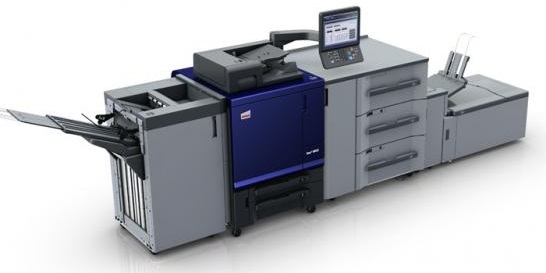

Ineo+ 4065
Программы
Распечатка
- Создание макета в CorelDraw
- Запуск печати сочетанием клавишь CTRL + P
Термины
4 + 0
Печать с одной стороны листа
Не запекается клей
Повысить температуру печи
Не запекается клей по краям листа
Держать лист по центру печи, подобрать оптимальную температуру
Не печатается макет из изтории напечатанных
Проверить margin и наличие файла в папке
Ошибки
Расхождение
Снизить температуру печи
Не запекается клей
Повысить температуру печи
Не запекается клей по краям листа
Держать лист по центру печи, подобрать оптимальную температуру
Не печатается макет из изтории напечатанных
Проверить margin и наличие файла в папке
Характеристики

Head Select
Two Heads_4C1W
Margin Setting
Advance Function
Common Setting
ColorBar Setting
Eclosion Setting
Load Ink
Auto Jump White